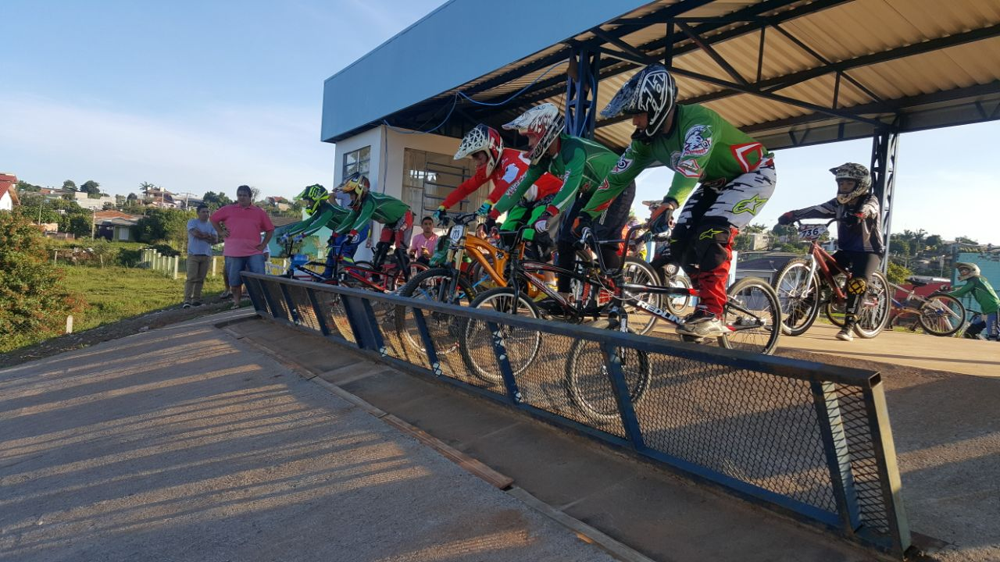

HISTÓRIA
O BMX, também conhecido como bicicross, é o caçula do ciclismo. A origem da modalidade data das décadas de 1960 e 1970, época em que as vertentes mais tradicionais do esporte — estrada e pista — já faziam parte dos Jogos Olímpicos. O BMX surgiu graças à admiração de jovens norte-americanos pelo MotoCross. A vontade de imitar as manobras dos ídolos aliada à falta de equipamento fez com que bicicletas fossem utilizadas em pistas de terra. Nasceu, então, o Bicycle Moto Cross, ou simplesmente BMX.
Bem mais barato e fácil de ser praticado que sua modalidade inspiradora, o BMX cresceu rapidamente, especialmente entre os jovens. Na década de 1970, o esporte viu a criação da primeira federação, nos Estados Unidos. Em 1981, surgiu a Federação Internacional de BMX. Um ano depois ocorreu o primeiro Campeonato Mundial da categoria, disputado em Dayton, nos Estados Unidos. Todos os campeões foram pilotos norte-americanos. Em 1993, a União Ciclística Internacional (UCI) passou a regular o esporte.
As provas do BMX são disputadas em baterias com 8 atletas cada, até se chegar à final. As bicicletas utilizadas pelos competidores possuem rodas com aro 20”, além de uma marcha e um freio. A largada é dada de uma plataforma de cerca de 10m de altura e os atletas passam por obstáculos montados na pista até cruzar a linha de chegada.
O BMX fez sua primeira aparição olímpica nos Jogos Olímpicos de Pequim-2008, com disputas tanto no masculino quanto no feminino. No Rio de Janeiro-2016 será a terceira vez que o BMX distribuirá medalhas em uma edição dos Jogos.
O BMX possui diversas modalidades, entre elas estão:
- Street
- Mini Ramp
- Dirt Jump
- Flatland
- Vertical
- Park
CURIOSIDADES
O único bicampeão
Na cidade de Valmiera, na Letônia, Maris Strombergs é considerado um herói do esporte. Boa parte do sucesso dele se deve à inclusão do BMX nos Jogos Olímpicos. O letão é o único atleta do BMX a ter subido no pódio tanto em Pequim-2008 quanto em Londres-2012. E Strombergs não só subiu no pódio como conquistou o ouro em ambas as edições, sagrando-se o primeiro bicampeão olímpico da história do BMX.
Em 2008, na China, ele completou o percurso em 36.19s, deixando para trás os norte-americanos Mike Day (prata, com o tempo de 36.60s) e Donny Robinson (bronze, com 36.97s). Em Londres-2012, Strombergs chegou à final para defender seu título e terminou o percurso em 37.57s. O segundo lugar ficou com o australiano Sam Willoughby (37.92s) e o terceiro com o colombiano Carlos Mario Oquendo Zabala (38.25s).
Diversidade no pódio
O ciclismo BMX distribuiu 12 medalhas na história dos Jogos Olímpicos. O histórico dos atletas que subiram ao pódio registra uma diversidade grande de países. Das 12 medalhas, 7 foram para atletas de diferentes nações. Os Estados Unidos são o país com mais medalhas. Os norte-americanos não conseguiram o ouro, mas têm 2 pratas e 1 bronze no currículo, todas conquistadas em Pequim-2008.
Depois dos EUA, França, Letônia e Colômbia são os países com mais medalhas no BMX. As francesas Anne-Caroline Chausson e Laetitia Le Corguille foram ouro e prata na prova feminina em 2008. Pela Letônia, Maris Strombergs conquistou o ouro tanto na China quanto em Londres-2012. Já a Colômbia registrou todo seu sucesso na Inglaterra, com o ouro de Mariana Pajón no feminino e o bronze de Carlos Mario Oquendo Zabala no masculino.
Rio 2016
A competição de ciclismo BMX nas Olimpíadas do Rio em 2016 foi um evento emocionante e de extrema importância para a exposição do esporte para o povo brasileiro. O BMX, uma modalidade de ciclismo que envolve corridas em pistas cheias de obstáculos, conquistou os corações dos espectadores e trouxe uma nova energia para o cenário esportivo nacional.
A realização da competição de BMX nas Olimpíadas do Rio foi um marco significativo, pois foi a primeira vez que o esporte fez parte do programa olímpico. Isso permitiu que atletas brasileiros e internacionais demonstrassem suas habilidades e talento diante de um público global, transmitindo a essência emocionante e desafiadora do ciclismo BMX.
| Competidores | Posições | Tempo | Nacionalidade |
|---|---|---|---|
| Connor Fields | 1º | 34.62s | EUA |
| Jelle Van Gorkom | 2º | +0.68s | HOL |
| Nicholas Long | 3º | +0.88s | EUA |
| Ramirez Yepes | 4º | +0.88s | COL |
| Tory Nyhaug | 5º | +1.03s | CAN |